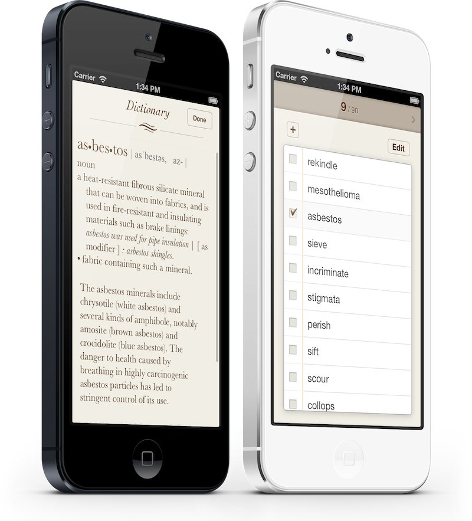
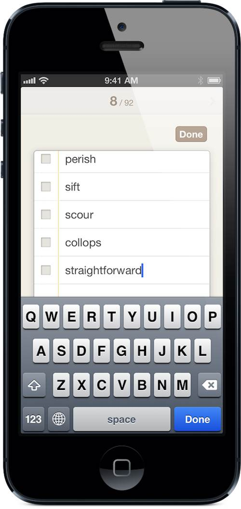
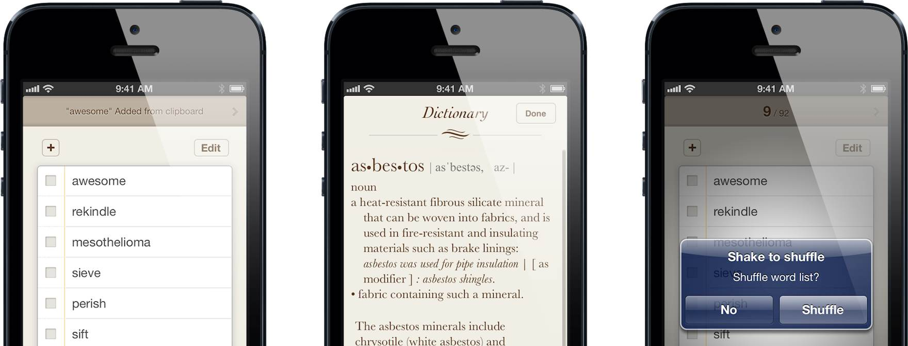

WordRemindr


워드리마인더
단어 암기를 위한 To-do + 영영사전
워드리마인더는 영어 중-상급자를 위한 단어 암기 앱입니다. 아이폰에 내장된 영영사전을 활용해 보세요. 외울 목록에 단어를 추가하고, 슥슥 살펴보고, 단 한번의 탭으로 사전을 띄워 뜻을 알아보세요. 외웠다는 확신이 들면 체크마크에 표시하세요, 단어가 외운 목록으로 들어갑니다.
아이튠즈에서 $1.99에 다운받기
작고 가벼움
워드리마인더는 단 두 개의 화면으로 구성됩니다. 외울 목록, 외운 목록 단 두 가지 목록을 이용하여 좀 더 집중하여 단어를 암기하세요.
쓸모없는 기능 없이, 빠르게 열리고, 빠르게 실행되며, 가볍습니다.
기본 기능
- 간결하고 직관적인 인터페이스 : 좌우로 쓸어넘겨 목록을 전환하세요. 각 목록은 iOS기본 테이블과 똑같이 동작합니다.
- 다국어 지원 : 워드리마인더는 시스템 사전이 지원하는 모든 언어를 지원합니다. 영어, 일본어, 중국어, 독일어, 프랑스어, 스페인어 단어의 의미를 쉽고 빠르게 알아보세요.
- 목록 날짜별 정렬 : 외운 목록에 단어들은 외운 날짜를 기준으로 보관되고 정렬됩니다. 매일매일 단어 암기 진척 상황을 점검할 수 있습니다.
- Voice over 호환 : Voice over지원은 단지 시각 장애인을 위한 것은 아닙니다. 누구나 Voice over를 이용하여 단어가 어떻게 발음 되는 지 알 수 있습니다.
- 오프라인 실행 : 시스템 내장 사전을 사용하기 때문에 네트워크 연결이 필요하지 않습니다.

똑똑한 기능
스마트 붙여넣기
앱을 처음 실행하거나 다른 앱에서 워드리마인더로 돌아올 때, 클립보드에 한 단어가 들어있으면 자동으로 외울 목록 최상단에 붙여넣습니다.
빌트인 사전
모든 아이폰(아이팓 터치도)에는 훌륭한 영영사전이 탑재되어 있습니다. 워드리마인더는 이 시스템 내장 사전을 이용하여, 단 한 번의 탭으로 단어의 뜻을 보여줍니다.
흔들어 목록 섞기
잘 정리된 단어 목록은 단어들의 순서에서 비롯된 이미 외웠다는 착각을 일으키기 쉽습니다. 기기를 흔들어서, 단어 순서를 무작위로 재배치 하여 단어 뜻을 좀 더 확실하게 외우세요.
*주의 : 키보드에 하나 이상의 언어가 설정되어 있는 경우, 현재 언어에 따라 사전을 띄웁니다. 영-한 사전은 아직 지원되지 않습니다. 하지만 진지한 영어 공부를 하려면 영영사전이 기본이죠.